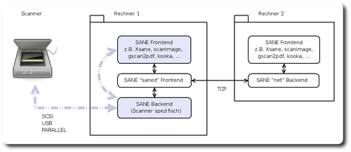

SANE
Ausbaufähige Anleitung
Dieser Anleitung fehlen noch einige Informationen. Wenn Du etwas verbessern kannst, dann editiere den Beitrag, um die Qualität des Wikis noch weiter zu verbessern.
Anmerkung: Zu den vielfältigen Funktionen, welche SANE bei Scannern unterstützen kann - wie automatische Dokumenteneinzüge (ADF) - könnte noch berichtet oder der Artikel Scanner entsprechend ergänzt werden.
Zum Verständnis dieses Artikels sind folgende Seiten hilfreich:
Scanner gibt es in vielen Ausführungen. Um die grundsätzlichen Funktionen eines Scanners wie zum Beispiel Auflösung, Schwarzweiß- / Graustufen- / Farbscans oder Sondertasten verwenden zu können, bedarf es eines Gerätetreibers. Ubuntu und generell Linux verwendet eine eigene offene Schnittstelle für Scanner, welche von den Herstellern unabhängig ist: die SANE Schnittstelle  . Diese Schnittstelle wurde als Standard nicht nur für Flachbettscanner, sondern auch für Handscanner, Video- und Stillkameras oder "Frame-Grabber" entwickelt.
. Diese Schnittstelle wurde als Standard nicht nur für Flachbettscanner, sondern auch für Handscanner, Video- und Stillkameras oder "Frame-Grabber" entwickelt.
Die generelle Verwendung eines Scanners - mit Hinweisen auf diverse Scanner und Scanprogramme - wird in den Artikeln Scanner und Scanner/Software beschrieben. In diesem Artikel wird eher auf die Konfiguration besonderer SANE-Funktionalitäten eingegangen.
Installation¶
Das benötigte Paket[1]
libsane
ist Bestandteil jeder Ubuntu-Installation.
PPA¶
Wer eine aktuellere Version von SANE benötigt, kann diese über ein PPA beziehen.
Adresszeile zum Hinzufügen des PPAs:
ppa:rolfbensch/sane-git
Hinweis!
Zusätzliche Fremdquellen können das System gefährden.
Ein PPA unterstützt nicht zwangsläufig alle Ubuntu-Versionen. Weitere Informationen sind der  PPA-Beschreibung des Eigentümers/Teams rolfbensch zu entnehmen.
PPA-Beschreibung des Eigentümers/Teams rolfbensch zu entnehmen.
Damit Pakete aus dem PPA genutzt werden können, müssen die Paketquellen neu eingelesen werden.
Über die Aktualisierungsverwaltung bekommt man nun eine aktuelle SANE-Version.
Manuell¶
Die manuelle Installation von Sane wird im Artikel SANE/Kompilieren beschreiben. Dies ist z.B. dann immer sinnvoll, wenn der eigene Scanner von den SANE-Version aus den Paketquellen nicht oder unvollständig unterstützt wird. Eine Parallelinstallation mit der Version aus den Quellen ist möglich.
Wird mein Gerät von SANE unterstützt?¶
Scanner, welche das SANE-Projekt (Scanner Access Now Easy) unterstützt und direkt am Computer z.B. durch einen USB-, SCSI- oder PARALLEL(Drucker)-Anschluss angeschlossen sind, werden sofort erkannt und können benutzt werden. Nur in sehr seltenen Fällen muss oder kann man hier nachbessern.
Im Artikel Scanner wird im Abschnitt Hardware genauer darauf eingegangen.
Das SANE-Konzept unterscheidet sich wesentlich z.B. von den TWAIN-Scanner-Gerätetreibern , wie sie für das Apple- und Windows-Betriebssystem entwickelt werden. SANE beruht auf der strikten Trennung der Kommunikation zwischen dem Scannertreiber (genannt Backend) und dem jeweils verwendeten Scanprogramm (genannt Frontend).
SANE ermöglicht durch diesen modularen Aufbau einen standardisierten Zugriff für beliebige Scanprogramme, seien es solche für die Kommandozeile [2], für die grafische Oberfläche und über Rechnergrenzen mit Hilfe eines Netzwerkes hinweg (Details dazu im Artikel SANE-Scanserver im Netzwerk). Dies ist mit TWAIN-Treibern natürlich auch möglich, hier sind Programm und Gerätetreiber jedoch viel enger verzahnt und jedes Programm eine Einzelentwicklung.
Hinweis:
Es gibt aus den eben genannten Gründen keine Möglichkeit, TWAIN-Treiber für den Betrieb von Scannern unter Linux zu verwenden. Umgekehrt ist die Realisierung des Zugriffs auf einen SANE-Scanner über eine TWAIN-Schnittstelle einfach: Mit SaneTwain gibt es ein Programm, welches den SANE-Scanner unter Windows verfügbar macht. Für den Mac gibt es das Projekt Twain-Sane . Dies funktioniert auch im Netzwerk.
SANE-Scanner in der VirtualBox¶
Inzwischen ist auch das Betreiben eines SANE-fähigen USB-Scanners in einer VirtualBox (zumindest ab Version 3.1.6 PUEL) mit Ubuntu als Gastsystem ohne größere Probleme möglich. Wenn mit dem Befehl lsusb auch im Gastsystem der Scanner angezeigt wird, sollte eine Konfiguration wie unter Scanner bzw. den entsprechenden Artikeln zum jeweiligen Backend beschrieben möglich sein; das gilt zumindest für das gt68xx-Backend. Falls der Scanner bei den USB-Einstellungen zur VirtualBox nicht auftaucht und im Gastsystem nicht angezeigt wird, hilft es ggf., bei den USB-Einstellungen zur VirtualBox einen leeren Filter zu erstellen; damit wird der Scanner auch im Gastsystem erkannt. Eine Alternative ist die Verwendung des net-Backends, wenn der Scanner nicht direkt erkannt wird.
Achtung!
Es sei an dieser Stelle darauf hingewiesen, dass besonders sehr neue oder "exotische" Scanner-Modelle - z.B. solche mit ausgefeilten Funktionen wie Einzelblatteinzügen, aufwendigen Negativ- oder Diascanfunktionen - selten unterstützt werden. Man sollte also auf jeden Fall vorher gründlich recherchieren und gegebenenfalls mit dem Notebook oder einer Ubuntu Live CD beim Händler das Gerät auf Kompatibilität testen. Die Enttäuschung könnte sonst groß sein.
Backend¶
Ein "Backend" ist der SANE-Gerätetreiber für einen bestimmten Scanner oder eine Gruppe von Scannern. Alle Backends werden über Dateien im Verzeichnis /etc/sane.d/ konfiguriert. Sie können mit einem Texteditor[3] mit Root-Rechten[4] bearbeitet werden.
Einzelne Backends werden über separate Dateien nach dem Muster /etc/sane.d/backendname.conf konfiguriert. Alle im System verfügbaren Backends sind global in der Datei /etc/sane.d/dll.conf aufgelistet. Aktive Treiber stehen jeweils in einer Zeile, inaktive sind mit einem Rautezeichen (#) am Anfang der Zeile auskommentiert.
Die Übersichtsseite der unterstützten Geräte auf der SANE-Homepage lässt die Suche nach Hersteller ("Manufacturer") oder dem Namen des "Backends" zu. Leider gibt es diese Seite nur in englischer Sprache. Man sollte nicht zögern, dem SANE-Team in Form eines Bug-Reports mitzuteilen, wenn man der Liste der unterstützten Geräte etwas hinzuzufügen hat. Das SANE-Projekt lebt wie alle anderen Open-Source-Projekte von der Rückmeldung.
Man sollte auch beachten, dass die in der verwendeten Ubuntu-Version installierte SANE-Version nicht zwangsläufig mit der aktuellen übereinstimmen muss. Ein Blick in die Paketverwaltung[1] oder die Ubuntu-Paketübersicht und die Version des Paketes libsane gibt hier nähere Auskunft.
Ein besonderes Backend ist das "net"-Backend. Es ermöglicht den "indirekten" Zugriff auf einen Scanner über den Scandaemon saned. Dies wird im Artikel über die Einrichtung eines SANE-Scanservers ausführlich erläutert.
Backends in libsane-extras¶
Die folgenden Scanner sind noch nicht in das SANE-Projekt integriert, für sie muss das Paket libsane-extras installiert werden. Vorne steht das Backend, in den Klammern danach die Scanner selbst. Weitere Modelle, die das betrifft, können gerne nachgetragen werden!
geniusvp2(Genius ColorPage-Vivid Pro II)hp_rts88xx(HP ScanJet 4400C, HP ScanJet 4470C; ab libsane-1.0.20 schon im Hauptprogramm integriert)ls5000(Nikon LS-5000 ED, Coolscan 5000 ED)
Es muss folgendes Paket [1] installiert werden:
libsane-extras (universe)
 mit apturl
mit apturl
Paketliste zum Kopieren:
sudo apt-get install libsane-extras
sudo aptitude install libsane-extras
Extra Backends¶
Die meisten Hersteller liefern ihre Geräte leider nur mit "TWAIN"-Treibern für das Windows- oder Apple-Betriebssystem aus. In wenigen Fällen gibt es eigene Linux-Treiber für Produkte: Hewlett Packard zum Beispiel oder die Firmen Brother und Epson entwickeln eigene SANE-kompatible Backends.
Diese Backends von externen Herstellern haben jedoch noch nicht den Eingang in die offizielle SANE-Version gefunden. Der Grund hierfür liegt darin, dass sie zum Großteil keine quelloffene Software darstellen und deshalb nicht vom SANE-Projekt unterstützt werden können. Sie wurden deshalb im Unterprojekt "external backends" ausgelagert.
Die Liste der externen Backends verweist detailliert auf die Webseiten der einzelnen externen Backendprojekte. Sie gibt eine Übersicht der bekannten Funktionalitäten und Kompatibilitäten. Korrekturen und Hinweise zu den dortigen Tabellen kann man jederzeit an das SANE-Team in Form eines Bug Reports melden.
Frontend¶
Als SANE-"Frontends" bezeichnet man alle Programme, welche über ein Backend auf einen Scanner zugreifen können. Dies sind Anwenderprogramme wie im Artikel Scanner (Abschnitt Software) beschrieben.
Aber auch besondere Spezialitäten sind darunter, wie der Netzwerk Scandaemon saned oder das Befehlszeilenprogramm scanadf für Dokumenteneinzugsscanner. Eine Übersicht findet man auf saneproject.org .
Das folgende Bild erläutert nochmals schematisch die Zusammenhänge zwischen Backend, Frontend und Scanner. Sich diesen Sachverhalt einzuprägen, kann zum späteren Verständnis der Konfiguration sehr hilfreich sein. Der Normalfall (Scanner direkt am Rechner angeschlossen) ist violett hervorgehoben. 
Links¶
Wikiartikel zur Installation von Scannern und Scannersoftware:
Artikel der Zeitschrift c't aus dem Jahr 1999
 - Älterer, aber grundsätzlich wertvoller und stimmiger Artikel zum Thema
- Älterer, aber grundsätzlich wertvoller und stimmiger Artikel zum ThemaScanning HowTo
- Ubuntu Community Documentation SANE Homepage
- Links aus der "saned"-Manpage.SANE Network Daemon
- für Fortgeschrittene, gute Hinweise zum Absichern des saned (Passwortschutz) und zum TroubleshootingSaneTwain
- Windows Client für SANE-Server Twain-Sane
- Mac Client für SANE-Server
- Erstellt mit Inyoka
-
 2004 – 2017 ubuntuusers.de • Einige Rechte vorbehalten
2004 – 2017 ubuntuusers.de • Einige Rechte vorbehalten
Lizenz • Kontakt • Datenschutz • Impressum • Serverstatus -
Serverhousing gespendet von